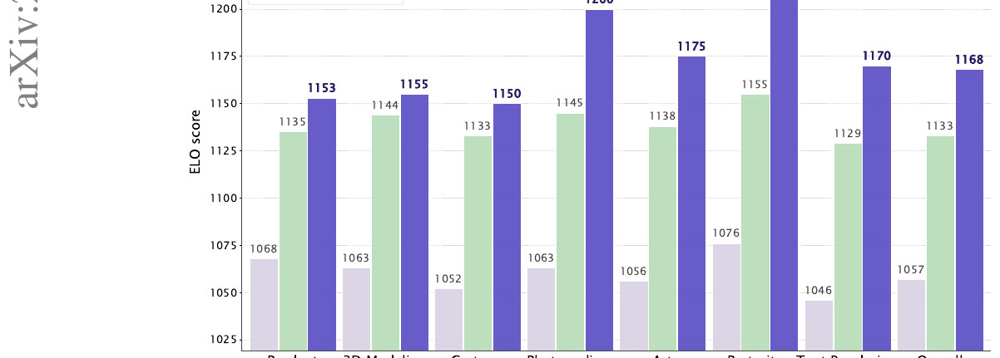
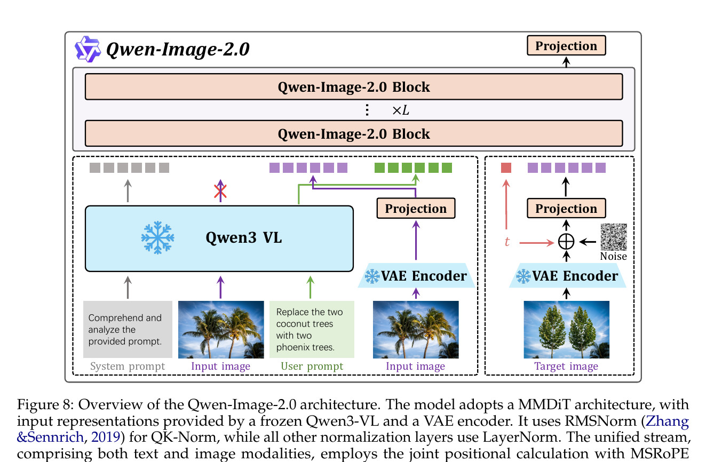
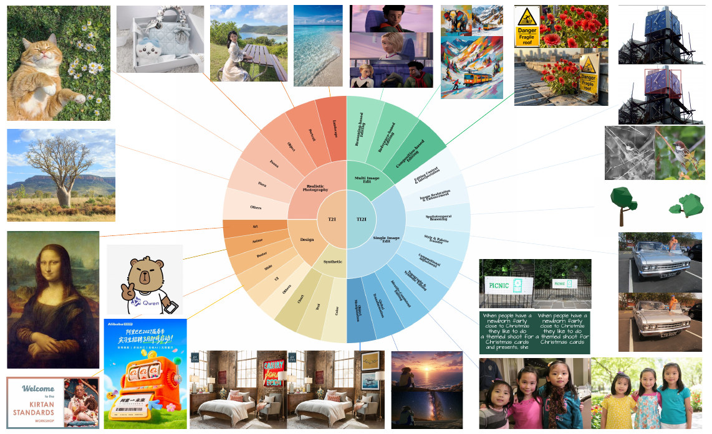
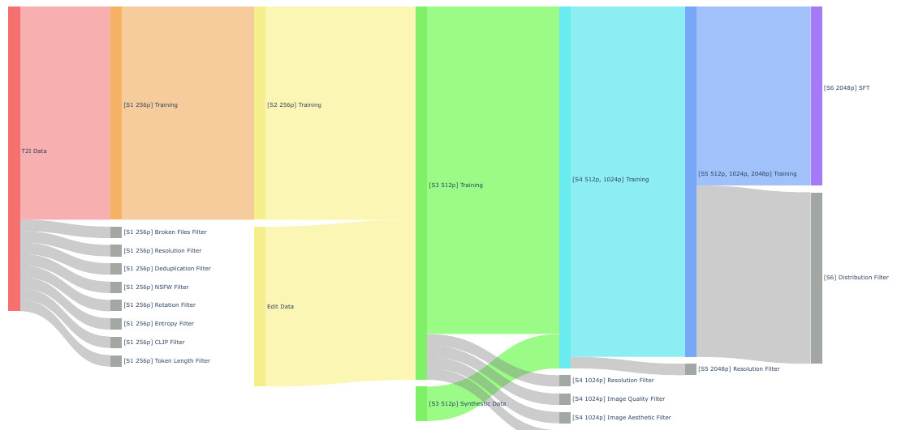
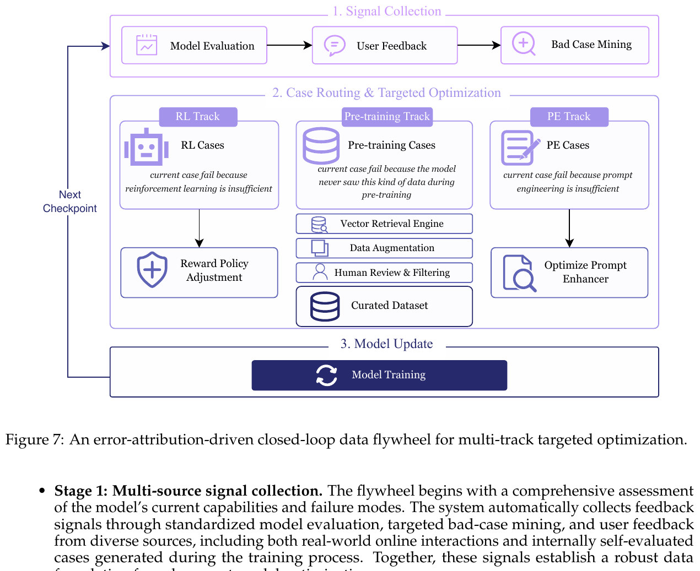

速览

五条要点
生成和编辑合进一个 MMDiT
冻结 Qwen3-VL 编码 system prompt + 输入图 + 指令，输入图和目标图另走 VAE；编辑数据从 256p 阶段就进场§2.3，T2I:TI2I 从 0.9:0.1 调到 0.7:0.3表 2。
f16c64 VAE 撑原生 2K
16× 下采样 + 64 通道，与 f8c16 总通道瓶颈相同；ImageNet PSNR 33.42 / SSIM 0.9225，文本集 PSNR 32.81，在 f16 组里最好表 1。语义对齐先强后松，去掉对抗损失§3.1。
数据：六阶段过滤 + 四类 caption + 飞轮
256p 时 8 道过滤，1024p 再加 4 道，2048p 再加分辨率门槛，SFT 复用同一套算子并收紧阈值§2.3。caption 分 General / Text / Knowledge / Structured§2.2。坏例按错因分到 RL / 预训练 / PE 三条线§2.4。
RL 奖励按任务拆开
T2I 用美学、图文对齐、人像三类奖励，TI2I 用指令遵循、视觉一致性两类§4.2。GRPO 中 rollout 用 CFG，策略目标不含无条件分支。
定量评测很薄
只有 LMArena T2I ELO 1168（比 Qwen-Image-2512 高 35推算）和 VAE 重建表；没有任何编辑定量基准、没有消融，参数量和数据量都没给§5。
架构：Qwen3-VL + VAE + MMDiT
三件套与 Qwen-Image 一脉相承，主要改动在 VAE 和 block 内部细节。

条件路径 §3.2
Qwen3-VL 先把视觉输入 x、文本输入 y 编成 hx、hy，再把 hx 替换为 VAE latent Ex，拼成 h = Concat(Ex, hy) 送入 block式 1。原生支持交错多图输入。
Block 内改动 §3.2
- 调制去偏置：h′ = αh，取代 h′ = αh + β式 2
- MLP 换 SwiGLU，缓解联合训练激活过大、神经元过早饱和式 3
- QK-Norm 用 RMSNorm，位置编码沿用 MSRoPE图 8
VAE：f16c64 §3.1
- 残差自编码器（非参数 shortcut）保细节
- 64 通道 latent，总通道瓶颈与 f8c16 相同
- 在内部文本密集语料上训练（PDF、幻灯片、海报 + 合成段落；英文与中文）
- 损失：重建 + 感知 + 语义对齐（参照 VA-VAE），去掉对抗损失
- 语义对齐动态：早期强约束建立可扩散 latent，后期放松换重建
原文没给的 未披露
DiT 层数 L、隐藏维、patch 大小、总参数量、Qwen3-VL 具体尺寸、推理延迟。摘要与贡献里说「更快推理」§1，但正文没有任何速度数字。
VAE 重建对比全表表 1 · 10 个 tokenizer
| 模型 | 设置 | Enc (M) | Dec (M) | ImageNet PSNR | ImageNet SSIM | Text PSNR | Text SSIM |
|---|---|---|---|---|---|---|---|
| 8× 压缩 | |||||||
| SD-3.5 | f8c16 | 34 | 50 | 31.22 | 0.8839 | 29.93 | 0.9658 |
| Cosmos-CI8x8 | f8c16 | 31 | 46 | 32.23 | 0.9010 | 30.62 | 0.9664 |
| Wan2.1 | f8c16 | 54 | 73 | 31.29 | 0.8870 | 26.77 | 0.9386 |
| HunyuanVideo | f8c16 | 100 | 146 | 33.21 | 0.9143 | 32.83 | 0.9773 |
| FLUX.1-dev | f8c16 | 34 | 50 | 32.84 | 0.9155 | 32.65 | 0.9792 |
| Qwen-Image | f8c16 | 54 | 73 | 33.42 | 0.9159 | 36.63 | 0.9839 |
| 16× 压缩 | |||||||
| HunyuanImage-3.0 | f16c32 | 389 | 871 | 31.08 | 0.8655 | 29.23 | 0.9521 |
| Wan2.2 | f16c48 | 150 | 555 | 31.30 | 0.8784 | 28.19 | 0.9508 |
| Stepvideo-T2V | f16c64 | 110 | 389 | 31.54 | 0.8973 | 29.62 | 0.9641 |
| Qwen-Image-2.0 | f16c64 | 79 | 259 | 33.42 | 0.9225 | 32.81 | 0.9795 |
ImageNet-1k 验证集 256×256；Text 为内部文本密集集 256×256（不可复现）。圆点 = 全表该列最佳。表 1
数据：覆盖、caption、六阶段过滤、飞轮
三条原则：领域覆盖广、指令质量高、源图与目标图一致§2.1。全文没有给出任何图像数、编辑对数或类别占比。
4.1 来源与类别

T2I 图文对 §2.1
写实摄影、平面设计、艺术、合成图。写实部分覆盖人像、风景、物体等，保留长尾概念；另收幻灯片、海报、渲染素材等版式敏感内容，用来提升美学与构图可控性。
TI2I 编辑数据 §2.1
单图：属性修改、换背景、风格迁移、文字编辑、修复、结构感知操作。多图：参考生成与编辑、主体一致性、跨图风格迁移、组合合并。原文用「curate and composite」，即既收集也合成，但合成方法没写。
| 已披露规模 | 原文给了什么 | 来源 |
|---|---|---|
| T2I 图文对总量 | 原文未披露 | §2.1 |
| 编辑对总量（单图 / 多图） | 原文未披露 | §2.1 |
| 合成数据量与生成方式 | 原文未披露；只说 Stage 3（512p）引入 | §2.3 |
| 各类别占比 | 原文未披露；图 5 只有类别无数字 | 图 5 |
| 每阶段过滤后留存率 | 原文未披露 | §2.3 |
| T2I : TI2I 训练配比 | 预训练 0.9 : 0.1；继续预训练 0.7 : 0.3；SFT 0.7 : 0.3 | 表 2 |
| VAE 文本语料 | 「大规模内部」文本密集图：PDF、幻灯片、海报 + 合成段落，英文与中文；量未披露 | §3.1 |
4.2 Caption：四类分型
按任务类型和图像特征分别设计 caption 方案§2.2。标注所用模型、长度分布、语言配比原文都没给。
General 通用
任意分辨率与复杂度；主体、场景、空间关系，图中文字及其语义也写进去；支持多语言、多种长度。
Text 文字密集
幻灯片、漫画、海报、教辅材料；多套 prompt 模板，重点抽取密集文字、版式结构、视觉符号及其关系。
Knowledge 知识注入
以「条件」形式注入图像相关背景信息与上下文，不只写可见内容，帮模型建立世界知识关联。
Structured 结构化
关系图、流程图、示意图；显式建模实体、属性、关系，学层级与拓扑依赖。具体 schema 未公开。
4.3 六阶段数据流水线（与训练分辨率同步加码）

T2I 预训练
- Broken Files
- Resolution
- Deduplication
- NSFW
- Rotation
- Entropy（过低 / 过高）
- CLIP 相似度
- Token Length
T2I + TI2I
- + Edit Data
- 与 S1 过滤后的 T2I 直接混训
T2I + TI2I
- + Synthetic Data
- 提升多样性
混合分辨率
- Resolution（1024p）
- Image Quality
- Image Aesthetic
- Compression Quality
多分辨率
- Resolution（2048p 更严）
SFT
- Distribution Filter：复用前面算子、收紧阈值，去低质与不均衡样本
过滤器名称、顺序、分辨率均出自 §2.3 图 6。各过滤器阈值、模型、留存比例原文均未给。S1 的 8 道过滤原文明确为「sequential」。
4.4 错误归因驱动的数据飞轮

RL 线
对齐 / 策略类问题，判为「RL 不足」，自动调整奖励策略§2.4。
预训练线
判为「预训练没见过这类数据」。向量检索引擎做两件事：诊断是否某类数据稀缺；检索并泛化 T2I prompt 与编辑三元组（指令 + 底图）。数据增广后经人工审核过滤——这是全流程唯一的人工环节§2.4。
PE 线
模型能力够、但没读懂指令或 prompt 写得差，交给优化后的 Prompt Enhancer 改写输入§2.4。
信号来源包括线上真实交互与训练中内部自评的 case§2.4。错因如何判定（规则 / 模型 / 人工）原文没写。
4.5 Prompt Enhancer 的数据：反向降级
T2I：Pfine → Pshort + CoT §3.3
- LLM 先把细粒度标注 Pfine 分到 4 类：General / Portrait / Text / Complex Text
- 按类别从策略池采样降级策略：风格简化、口语化、删掉或模糊光照 / 纹理 / 版式 / 背景
- 按预设概率随机组合，调采样比例控制难度和信息密度
- 每步降级的逆操作就是 CoT，得到三元组 (Pshort, CoT, Pfine)
编辑：直接摘要 §3.3
输入图已提供大量上下文，所以编辑侧不做随机降级，改用 MLLM 把长标注压成简洁编辑指令。编辑 PE 强调忠实保留指令、尊重现有画面。
训练配方
三段监督训练 + RLHF，另有 DMD 少步蒸馏和独立训练的 PE。
预训练
- 步数
- 700K
- 分辨率
- 256 / 512
- Batch (K)
- 32 / 16
- LR
- 1×10⁻⁴
继续预训练
- 步数
- 250K
- 分辨率
- 512 / 1024 / 2048
- Batch (K)
- 16 / 8 / 4
- LR
- 2×10⁻⁵
SFT
- 步数
- ~10K
- 分辨率
- 512 / 1024 / 2048
- Batch (K)
- 16 / 8 / 4
- LR
- 1×10⁻⁵
RLHF（GRPO）
- 奖励
- 5 类
- CFG
- 仅 rollout
- 步数 / LR
- 未披露
共享超参：Adam，weight decay 0.001，梯度裁剪 1.0，无条件 dropout 0.1表 2。Batch Size 列原表单位为 K。
T2I : TI2I 配比 表 2
只有这一组比例原文给出；T2I 内部、TI2I 内部各类别占比均未披露。
奖励与优化 §4.2
- T2I：美学、图文对齐（遗漏 / 误读 / 违背要求要罚）、人像（解剖、比例、面部身份细节、皮肤头发质感）
- TI2I：指令遵循、视觉一致性（未改区域的几何布局、空间拓扑、语义特征与原图一致）
- 各奖励校准到可比尺度，权重训练中动态调整，防止单维过优化
- CFG 混合策略：rollout 用 CFG 采高质量候选；策略目标不含无条件分支，省算力
- 还会动态调整各任务的 prompt 分布
少步蒸馏 §4.3
- Distribution Matching Distillation：sfake − sreal 驱动学生梯度式 4
- fake score 由辅助模型在学生样本上用 flow matching 估计；real score 来自教师
- t 从如 logit-normal 的分布采样，xt = (1−t)xθ + tξ式 5
- 结果：4 NFE 学生与 40 步教师视觉相当（仅定性）图 11
Prompt Enhancer §3.3
- Qwen3.5-9B 初始化，生成与编辑共用一个 PE
- SFT：在反向降级数据上做 next-token 预测
- RL：GRPO，候选 prompt 送入冻结生成器出图
- 奖励 = MLLM 视觉一致性 + MLLM 美学 + 规则式文本约束
- 效果仅定性展示图 9
原文未给：RL 步数、组大小、学习率、KL 系数、奖励模型结构与训练数据量；蒸馏步数与超参；PE 的数据量。
评测
定量部分只有两样：LMArena T2I 盲评 ELO 与 VAE 重建。其余全是挑选样例的定性对比。
LMArena 文生图榜（2026-04-22 访问） §5.1 · 图 12
匿名两两对比、ELO 排名。Qwen-Image-2.0 ELO 1168，全球第 9，中国模型第 1，超过 Nano Banana。
数值读自论文图 1（首页图）。2.0 的 Portraits 数值在本地裁图中被截掉，未填。纵轴不从 0 开始，柱高只反映相对差距。图 1 的分项全是生成类目，没有编辑分项。
| 类目 | Qwen-Image | Qwen-Image-2512 | Qwen-Image-2.0 | 2.0 − 2512 |
|---|---|---|---|---|
| Product | 1068 | 1135 | 1153 | +18 |
| 3D Modeling | 1063 | 1144 | 1155 | +11 |
| Cartoon | 1052 | 1133 | 1150 | +17 |
| Photorealism | 1063 | 1145 | 1200 | +55 |
| Art | 1056 | 1138 | 1175 | +37 |
| Portraits | 1076 | 1155 | 裁切不可读 | — |
| Text Rendering | 1046 | 1129 | 1170 | +41 |
| Overall | 1057 | 1133 | 1168 | +35 |
来源 图 1；Overall 1168 与 §5.1 一致。最右列为本页相减 推算。提升最大的是 Photorealism（+55）和 Text Rendering（+41），与论文强调的写实与文字渲染方向吻合。
VAE 文本密集集重建 PSNR（dB） 表 1
内部文本密集集 256×256 的 PSNR（dB），横轴从 25 起。表 1 在 16× 组里 2.0 领先 Stepvideo-T2V 3.19 dB推算；但仍低于自家 8× 的 Qwen-Image（36.63）。
定性对比（每类 2 例）
| 场景 | 对比对象 | 论文指出的对手失败模式 | 来源 |
|---|---|---|---|
| 中文长文本渲染 | GPT-Image-2、NanoBanana Pro、Qwen-Image-2512、Wan2.7 Pro、Seedream 5.0 Lite | 字太小、错字、漏句或重复段落、无关内容、文字没贴到衣服上（成了字幕） | 图 13 · §5.2 |
| 人像（含文字的写实场景） | 同上 | 材质过平滑、把遮挡字面化为「SERVE(D)」、漏词、凭空数字、运动模糊没做到 | 图 14–15 · §5.2 |
| 编辑：古诗题字 | Qwen-Image-Edit-2511、Wan2.7 Pro、Seedream 5.0 Lite、NanoBanana Pro | 字号失衡、诗重复两份、错字、对句顺序颠倒、分列打乱阅读顺序 | 图 16 · §5.3 |
| 编辑：身份保持（单图 / 多图） | 同上 | 猫毛色花纹被改、姿态被改、物体放到猫后面、换了人种性别、面部特征变化 | 图 17 · §5.3 |
| 多语言 / 幻灯片 | 无对比，仅 2.0 展示 | — | 图 18–19 |
| PE 前后、RL 前后、蒸馏前后 | 自身消融式对照 | 仅图示，无数字 | 图 9–11 |
写实生成样例论文图 2
新在哪
只列能在原文核对、且不是常规工程的点。SwiGLU、RMSNorm QK-Norm 属常规选型，不计入。
高压缩 VAE 的「动态语义对齐」+ 去对抗损失
f16c64 保持与 f8c16 相同的通道瓶颈；语义对齐早期强、后期放松，并直接去掉 GAN 损失。在 16× 组里四项指标都最好表 1。
可核对点：表 1；但「动态」的调度曲线和去 GAN 的对比实验没给。
编辑数据从 256p 就并入预训练，配比随阶段上调
不是先训 T2I 再接编辑，而是 S2 起混训，T2I:TI2I 由 0.9:0.1 到 0.7:0.3§2.3 · 表 2。
可核对点：表 2 配比；无配比消融。
按错因分流的数据飞轮
坏例先归因到 RL / 预训练 / PE 三条线，预训练线用向量检索诊断数据稀缺并补数据，人工只留审核这一步§2.4 · 图 7。
可核对点：流程描述；无飞轮轮数或提升数字。
PE 的「反向降级 + 逆推 CoT」造数
从细标注按类别随机降级出口语短 prompt，降级操作的逆序就是 CoT 监督；再用冻结生成器出图做 GRPO§3.3。
可核对点：方法描述 + 图 9 定性。
扩散 GRPO 的混合 CFG
rollout 带 CFG 保证候选质量与奖励可靠，策略优化目标不含无条件分支以省算力§4.2。
可核对点：方法描述；与「两端都用 / 都不用 CFG」的对比没给。
对图像编辑数据、评测、caption 的启示
每条先写论文做法（带来源），再给一条迁移建议，不是论文内容。
C1caption 按图像类型分型
论文：General / Text / Knowledge / Structured 四套方案，Text 类专抽密集文字、版式、符号关系§2.2。
迁移建议，不是论文内容：编辑数据的源图 / 目标图描述也按类型切模板；文字编辑类单独一套，强制输出「原文字 → 新文字 + 位置 + 字体风格」，不和通用描述混用。
C2结构化 caption 承载关系
论文：对流程图、关系图用结构化 caption 显式写实体、属性、关系§2.2。
迁移建议，不是论文内容：编辑指令配一份 JSON：edit ops（对象、属性、目标值）+ preserve 列表（必须不变的身份、姿态、版式）。preserve 列表可以直接复用为一致性评测的检查项。
C3从细标注降级出口语指令
论文：T2I 侧把 Pfine 随机降级成 Pshort 并记录逆向 CoT；编辑侧改用 MLLM 把长标注摘要成简洁指令§3.3。
迁移建议，不是论文内容：同一编辑对生成 2–3 档长度 / 口语度的指令，训练时随机抽；评测集保留同一 case 的多档指令，单独报「短指令掉点」。
D1过滤器随分辨率阶段加码
论文：256p 用 8 道基础过滤；1024p 加质量、美学、压缩痕迹；2048p 加更严分辨率门槛；SFT 复用旧算子收紧阈值§2.3。
迁移建议，不是论文内容：编辑对的过滤也做成「一套算子 + 分阶段阈值表」，SFT 集不要另写新规则，便于追溯一条样本在哪一关被淘汰。
D2编辑数据早进场、配比分阶段
论文：编辑数据 S2（256p）进入，合成数据 S3（512p）进入；T2I:TI2I 0.9:0.1 → 0.7:0.3表 2。
迁移建议，不是论文内容：把 TI2I 占比当作显式旋钮，在小规模上 sweep（如 0.1 / 0.3 / 0.5）同时看 T2I 和编辑指标——论文没做这个消融，结论需自己验证。
D3坏例先归因，再决定补数据
论文：飞轮把失败分到 RL / 预训练 / PE 三条线，预训练线用向量检索判断该类数据是否稀缺§2.4。
迁移建议，不是论文内容：编辑 bad case 先查训练集近邻密度：近邻稀少 → 补数据；近邻充足但仍失败 → 查指令表述或奖励。归因结果写进 bad case 表，避免盲目加量。
D4人工只放在最后一道审核
论文：飞轮中唯一人工环节是增广后数据的审核过滤；SFT 数据也做人工精选§2.4 · §4.1。
迁移建议，不是论文内容：人工预算集中在「进 SFT / 进评测集」的门口，而不是均摊到全量清洗。
E1「改对了」和「没改坏」分开打分
论文：TI2I 奖励拆成指令遵循与视觉一致性两个模型，后者针对未改区域的几何布局、空间拓扑、语义特征§4.2。
迁移建议，不是论文内容：编辑评测至少报两个独立分数，不合成单一总分；一致性分再细到身份、姿态、版式三项。
E2把定性失败模式写成检查表
论文列出的对手失败：毛色 / 姿态被改、物体前后放错、字号失衡、诗句重复、对句顺序颠倒、阅读顺序打乱§5.3 · 图 16–17。
迁移建议，不是论文内容：把这些直接变成人工评测的勾选维度（空间关系、阅读顺序、字号比例、重复渲染、身份属性），比单一 1–5 分更好复盘。
E3重建上限单独测文本密集图
论文：VAE 同时报 ImageNet 与内部文本集，两者排名差异明显（如 Wan2.1 文本 PSNR 26.77）表 1。
迁移建议，不是论文内容：编辑的「保持区」误差下限由 VAE 决定；做一致性评测前先测一遍 VAE 往返误差，避免把 VAE 损失算到模型头上。
E4盲评按类目分桶报
论文：LMArena 按 Product / Photorealism / Text Rendering 等分项给 ELO图 1。
迁移建议，不是论文内容：自建编辑盲测（GSB）时按编辑类型分桶出胜率，与图 5 的 TI2I 类别对齐，能直接看出哪类编辑拖后腿。
局限与存疑
- 编辑没有任何定量评测。摘要说人评显示生成和编辑都大幅提升，但图 1 / 图 12 的分项全是生成类目；编辑只有图 16–17 共 4 个样例§5。
- 数据规模全未披露。图文对数、编辑对数、合成数据量、各类别占比、过滤留存率都没有；图 5 只有类别无数字§2。
- 没有消融。动态语义对齐、去对抗损失、去偏置调制、SwiGLU、混合 CFG、PE、飞轮、编辑配比都只有描述或定性图。
- 参数量与速度未给。贡献里写「更快推理」§1，正文没有延迟或吞吐数字；DiT 层数、隐藏维也没写。
- 蒸馏教师前后不一致。§4.3 正文说以 Qwen-Image-2.0-Base 为教师；图 11 题注说上排是 Qwen-Image-2.0-RL 40 步§4.3 · 图 11。
- 数据阶段与训练阶段对不齐。图 6 有 6 个数据阶段（含 S4 的 512/1024p），表 2 只有 3 个训练阶段（256/512 → 512/1024/2048），对应关系未说明；S6 在图 6 标 2048p，表 2 的 SFT 是 512/1024/2048图 6 · 表 2。
- VAE 的「全指标 SOTA」只在 16× 组成立。文本集 PSNR 32.81 低于 Qwen-Image（36.63）和 HunyuanVideo（32.83），ImageNet PSNR 与 Qwen-Image 持平；文本集是内部数据，不可复现表 1。
- RL / PE / 蒸馏超参缺失。奖励权重「动态调整」但无调度；RL 步数、组大小、KL 系数均未给§4.2。
- LMArena 是快照。2026-04-22 访问时的排名（#9），且只覆盖 T2I；对比对象的版本随榜单变化§5.1。
- 开源与许可证未写。原文没有提权重发布、代码或许可证。
图表索引
| 编号 | 内容 | 本页位置 |
|---|---|---|
| 图 1 | LMArena 分项 ELO，三代 Qwen-Image | 速览 · 评测 |
| 图 2 | 写实生成样例 | 评测（折叠） |
| 图 3–4 | 复杂文字渲染、编辑样例 | 未收录 |
| 图 5 | 数据类别分布（无数值） | 数据 4.1 |
| 图 6 | 六阶段数据流水线 | 数据 4.3 |
| 图 7 | 错误归因数据飞轮 | 数据 4.4 |
| 图 8 | 架构总览 | 架构 |
| 图 9 | PE 前后定性对比 | 文字引用 |
| 图 10 | Base vs RL 定性对比 | 文字引用 |
| 图 11 | 40 步教师 vs 4 NFE 学生 | 文字引用 |
| 图 12 | LMArena 榜单截图 | 文字引用 |
| 图 13–15 | 文字渲染 / 人像定性对比 | 评测表 |
| 图 16–17 | 编辑：古诗题字 / 身份保持 | 评测表 |
| 图 18–19 | 多语言渲染 / 幻灯片生成 | 未收录 |
| 表 1 | VAE 重建对比 | 架构（折叠） · 评测图 |
| 表 2 | 训练配置、配比、超参 | 训练配方 |